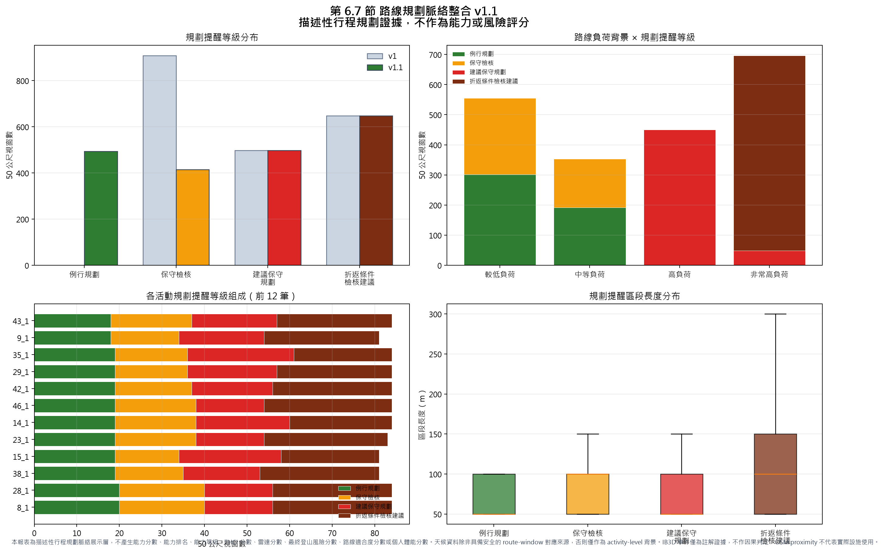
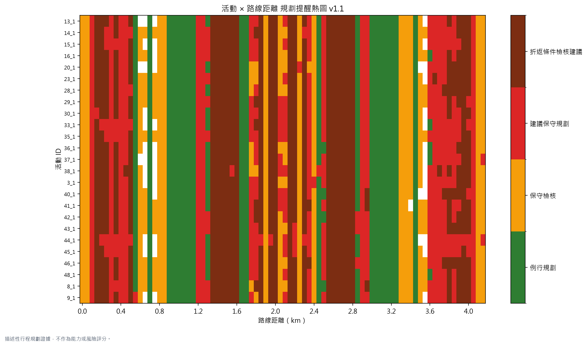
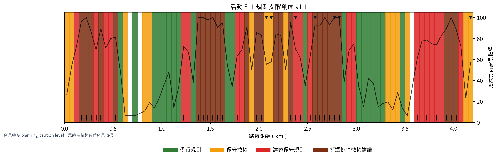
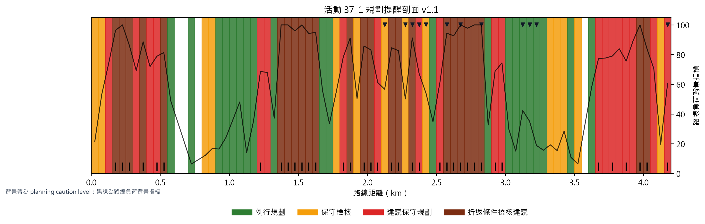

Audit: PASS_CH6_7_PLANNING_CONTEXT_FUSION_V1_1_RULE_CALIBRATED_DESCRIPTIVE_ONLY
Standalone PNG: D:\mountain_work\115_osm\outputs\report_figures\ch6_7_planning_context_fusion_report_v1_1\planning_context_fusion_report_v1_1.png

顯示不同活動在標準路線距離軸上的 planning caution level 分布。

背景帶為 planning caution level，黑線為路線負荷背景指標；此圖用於說明注意區段如何落在標準路線距離軸上。


| planning_caution_level | window_count |
|---|---|
| ROUTINE_PLANNING_CONTEXT | 494 |
| REVIEW_FOR_CONSERVATIVE_PLANNING | 414 |
| CONSERVATIVE_PLANNING_RECOMMENDED | 498 |
| TURNAROUND_CONDITION_REVIEW_RECOMMENDED | 648 |
| planning_caution_level | route_load_context_band | ROUTINE_PLANNING_CONTEXT | REVIEW_FOR_CONSERVATIVE_PLANNING | CONSERVATIVE_PLANNING_RECOMMENDED | TURNAROUND_CONDITION_REVIEW_RECOMMENDED |
|---|---|---|---|---|---|
| LOWER_ROUTE_LOAD_CONTEXT | 302 | 253 | 0 | 0 | |
| MODERATE_ROUTE_LOAD_CONTEXT | 192 | 161 | 0 | 0 | |
| HIGH_ROUTE_LOAD_CONTEXT | 0 | 0 | 450 | 0 | |
| VERY_HIGH_ROUTE_LOAD_CONTEXT | 0 | 0 | 48 | 648 |
| 層級 | 系統使用方式 | 是否可單獨提高提醒等級 | 說明 |
|---|---|---|---|
| A. 路線負荷證據 | 作為規劃提醒主線，描述坡度、高程、階梯、地形、支援、暴露與路線敏感脈絡。 | 可以 | 但仍屬描述性規劃證據，不是最終風險分數。 |
| B. 天候情境 | 描述活動當日或預報時段之溫度、濕度、降雨、風速、陣風與 UV。 | 不可以 | 只能在路線負荷或強 route context 存在時，加強保守規劃理由。 |
| C. 活動行為反應 | 比對使用者在類似高負荷區段是否有低速、停留或高心率反應。 | 不可以 | 它是反應證據，不回頭定義路線負荷。 |
| D. 事件註解 | 標註 high-HR recovery、short pause、off-route rest 等事件。 | 不可以 | 只作註解，不作因果判定。 |
| activity_id_short | windows_n | candidate_windows_n | routine_planning_context_windows_n | review_for_conservative_planning_windows_n | conservative_planning_recommended_windows_n | turnaround_condition_review_windows_n | planning_caution_window_ratio | turnaround_condition_review_window_ratio | event_annotation_windows_n |
|---|---|---|---|---|---|---|---|---|---|
| 13_1 | 80 | 38 | 20 | 14 | 19 | 27 | 75.0% | 33.8% | 6 |
| 14_1 | 84 | 28 | 19 | 19 | 22 | 24 | 77.4% | 28.6% | 5 |
| 15_1 | 81 | 35 | 19 | 15 | 24 | 23 | 76.5% | 28.4% | 51 |
| 16_1 | 83 | 41 | 20 | 18 | 18 | 27 | 75.9% | 32.5% | 17 |
| 20_1 | 79 | 38 | 20 | 16 | 15 | 28 | 74.7% | 35.4% | 41 |
| 23_1 | 83 | 44 | 19 | 19 | 16 | 29 | 77.1% | 34.9% | 54 |
| 28_1 | 84 | 40 | 20 | 20 | 16 | 28 | 76.2% | 33.3% | 6 |
| 29_1 | 84 | 39 | 19 | 17 | 21 | 27 | 77.4% | 32.1% | 45 |
| 30_1 | 82 | 39 | 20 | 15 | 22 | 25 | 75.6% | 30.5% | 42 |
| 33_1 | 81 | 27 | 21 | 14 | 25 | 21 | 74.1% | 25.9% | 1 |
| 35_1 | 84 | 36 | 19 | 17 | 25 | 23 | 77.4% | 27.4% | 43 |
| 36_1 | 81 | 36 | 22 | 17 | 16 | 26 | 72.8% | 32.1% | 40 |
| 37_1 | 80 | 37 | 21 | 14 | 20 | 25 | 73.8% | 31.2% | 12 |
| 38_1 | 81 | 45 | 19 | 16 | 18 | 28 | 76.5% | 34.6% | 54 |
| 3_1 | 81 | 37 | 20 | 15 | 20 | 26 | 75.3% | 32.1% | 7 |
| 40_1 | 81 | 42 | 21 | 14 | 17 | 29 | 74.1% | 35.8% | 6 |
| 41_1 | 83 | 41 | 20 | 16 | 18 | 29 | 75.9% | 34.9% | 6 |
| 42_1 | 84 | 46 | 19 | 18 | 19 | 28 | 77.4% | 33.3% | 10 |
| 43_1 | 84 | 47 | 18 | 19 | 20 | 27 | 78.6% | 32.1% | 20 |
| 44_1 | 80 | 22 | 20 | 13 | 32 | 15 | 75.0% | 18.8% | 7 |
| 45_1 | 81 | 30 | 20 | 15 | 25 | 21 | 75.3% | 25.9% | 4 |
| 46_1 | 84 | 44 | 19 | 19 | 16 | 30 | 77.4% | 35.7% | 13 |
| 48_1 | 84 | 45 | 21 | 18 | 18 | 27 | 75.0% | 32.1% | 14 |
| 8_1 | 84 | 38 | 20 | 20 | 16 | 28 | 76.2% | 33.3% | 6 |
| 9_1 | 81 | 43 | 18 | 16 | 20 | 27 | 77.8% | 33.3% | 54 |
Sorted by caution level and segment length. These are descriptive planning-review segments, not risk scores.
| activity_id_short | segment_start_m | segment_end_m | segment_length_m | dominant_planning_caution_level | dominant_route_load_context_band | planning_caution_reason_flags_merged |
|---|---|---|---|---|---|---|
| 44_1 | 3600 | 4100 | 500 | CONSERVATIVE_PLANNING_RECOMMENDED | HIGH_ROUTE_LOAD_CONTEXT | HIGH_ROUTE_LOAD_CONTEXT|WEATHER_HIGH_UV_CONTEXT|WEATHER_HUMID_CONTEXT|WEATHER_WIND_GUST_CONTEXT|VERY_HIGH_ROUTE_LOAD_CONTEXT|ROUTE_LOAD_BEHAVIOR_CANDIDATE |
| 15_1 | 3600 | 3950 | 350 | CONSERVATIVE_PLANNING_RECOMMENDED | HIGH_ROUTE_LOAD_CONTEXT | ROUTE_LOAD_BEHAVIOR_CANDIDATE|HIGH_ROUTE_LOAD_CONTEXT|WEATHER_HIGH_UV_CONTEXT|WEATHER_HUMID_CONTEXT|WEATHER_WIND_GUST_CONTEXT|VERY_HIGH_ROUTE_LOAD_CONTEXT |
| 33_1 | 200 | 550 | 350 | CONSERVATIVE_PLANNING_RECOMMENDED | HIGH_ROUTE_LOAD_CONTEXT | VERY_HIGH_ROUTE_LOAD_CONTEXT|WEATHER_HIGH_UV_CONTEXT|WEATHER_HUMID_CONTEXT|WEATHER_WIND_GUST_CONTEXT|HIGH_ROUTE_LOAD_CONTEXT |
| 35_1 | 3600 | 3950 | 350 | CONSERVATIVE_PLANNING_RECOMMENDED | HIGH_ROUTE_LOAD_CONTEXT | HIGH_ROUTE_LOAD_CONTEXT|WEATHER_HIGH_UV_CONTEXT|WEATHER_HUMID_CONTEXT|WEATHER_WIND_GUST_CONTEXT|ROUTE_LOAD_BEHAVIOR_CANDIDATE|VERY_HIGH_ROUTE_LOAD_CONTEXT |
| 44_1 | 200 | 550 | 350 | CONSERVATIVE_PLANNING_RECOMMENDED | VERY_HIGH_ROUTE_LOAD_CONTEXT | VERY_HIGH_ROUTE_LOAD_CONTEXT|WEATHER_HIGH_UV_CONTEXT|WEATHER_HUMID_CONTEXT|WEATHER_WIND_GUST_CONTEXT|HIGH_ROUTE_LOAD_CONTEXT |
| 45_1 | 3600 | 3950 | 350 | CONSERVATIVE_PLANNING_RECOMMENDED | HIGH_ROUTE_LOAD_CONTEXT | ROUTE_LOAD_BEHAVIOR_CANDIDATE|HIGH_ROUTE_LOAD_CONTEXT|WEATHER_HIGH_UV_CONTEXT|WEATHER_HUMID_CONTEXT|WEATHER_WIND_GUST_CONTEXT|VERY_HIGH_ROUTE_LOAD_CONTEXT |
| 14_1 | 3600 | 3900 | 300 | CONSERVATIVE_PLANNING_RECOMMENDED | HIGH_ROUTE_LOAD_CONTEXT | ROUTE_LOAD_BEHAVIOR_CANDIDATE|HIGH_ROUTE_LOAD_CONTEXT|WEATHER_HIGH_UV_CONTEXT|WEATHER_WIND_GUST_CONTEXT|VERY_HIGH_ROUTE_LOAD_CONTEXT |
| 33_1 | 3650 | 3950 | 300 | CONSERVATIVE_PLANNING_RECOMMENDED | HIGH_ROUTE_LOAD_CONTEXT | HIGH_ROUTE_LOAD_CONTEXT|WEATHER_HIGH_UV_CONTEXT|WEATHER_HUMID_CONTEXT|WEATHER_WIND_GUST_CONTEXT|VERY_HIGH_ROUTE_LOAD_CONTEXT |
| 37_1 | 3650 | 3950 | 300 | CONSERVATIVE_PLANNING_RECOMMENDED | HIGH_ROUTE_LOAD_CONTEXT | ROUTE_LOAD_BEHAVIOR_CANDIDATE|HIGH_ROUTE_LOAD_CONTEXT|WEATHER_HIGH_UV_CONTEXT|WEATHER_WIND_GUST_CONTEXT|VERY_HIGH_ROUTE_LOAD_CONTEXT |
| 3_1 | 3600 | 3900 | 300 | CONSERVATIVE_PLANNING_RECOMMENDED | HIGH_ROUTE_LOAD_CONTEXT | ROUTE_LOAD_BEHAVIOR_CANDIDATE|HIGH_ROUTE_LOAD_CONTEXT|WEATHER_HIGH_UV_CONTEXT|WEATHER_HUMID_CONTEXT|WEATHER_WIND_GUST_CONTEXT|VERY_HIGH_ROUTE_LOAD_CONTEXT |
| 15_1 | 250 | 500 | 250 | CONSERVATIVE_PLANNING_RECOMMENDED | HIGH_ROUTE_LOAD_CONTEXT | VERY_HIGH_ROUTE_LOAD_CONTEXT|WEATHER_HIGH_UV_CONTEXT|WEATHER_HUMID_CONTEXT|WEATHER_WIND_GUST_CONTEXT|HIGH_ROUTE_LOAD_CONTEXT|ROUTE_LOAD_BEHAVIOR_CANDIDATE |
| 35_1 | 250 | 500 | 250 | CONSERVATIVE_PLANNING_RECOMMENDED | HIGH_ROUTE_LOAD_CONTEXT | VERY_HIGH_ROUTE_LOAD_CONTEXT|WEATHER_HIGH_UV_CONTEXT|WEATHER_HUMID_CONTEXT|WEATHER_WIND_GUST_CONTEXT|ROUTE_LOAD_BEHAVIOR_CANDIDATE|HIGH_ROUTE_LOAD_CONTEXT |
| 36_1 | 3650 | 3900 | 250 | CONSERVATIVE_PLANNING_RECOMMENDED | HIGH_ROUTE_LOAD_CONTEXT | ROUTE_LOAD_BEHAVIOR_CANDIDATE|HIGH_ROUTE_LOAD_CONTEXT|WEATHER_HIGH_UV_CONTEXT|WEATHER_HUMID_CONTEXT|WEATHER_WIND_GUST_CONTEXT|VERY_HIGH_ROUTE_LOAD_CONTEXT |
| 45_1 | 250 | 500 | 250 | CONSERVATIVE_PLANNING_RECOMMENDED | HIGH_ROUTE_LOAD_CONTEXT | VERY_HIGH_ROUTE_LOAD_CONTEXT|WEATHER_HIGH_UV_CONTEXT|WEATHER_HUMID_CONTEXT|WEATHER_WIND_GUST_CONTEXT|ROUTE_LOAD_BEHAVIOR_CANDIDATE|HIGH_ROUTE_LOAD_CONTEXT |
| 13_1 | 3600 | 3800 | 200 | CONSERVATIVE_PLANNING_RECOMMENDED | HIGH_ROUTE_LOAD_CONTEXT | ROUTE_LOAD_BEHAVIOR_CANDIDATE|HIGH_ROUTE_LOAD_CONTEXT|WEATHER_HIGH_UV_CONTEXT|WEATHER_WIND_GUST_CONTEXT |
| 20_1 | 3600 | 3800 | 200 | CONSERVATIVE_PLANNING_RECOMMENDED | HIGH_ROUTE_LOAD_CONTEXT | ROUTE_LOAD_BEHAVIOR_CANDIDATE|HIGH_ROUTE_LOAD_CONTEXT|WEATHER_HIGH_UV_CONTEXT|WEATHER_WIND_GUST_CONTEXT |
| 29_1 | 3600 | 3800 | 200 | CONSERVATIVE_PLANNING_RECOMMENDED | HIGH_ROUTE_LOAD_CONTEXT | ROUTE_LOAD_BEHAVIOR_CANDIDATE|HIGH_ROUTE_LOAD_CONTEXT|WEATHER_HIGH_UV_CONTEXT|WEATHER_HUMID_CONTEXT|WEATHER_RAIN_CONTEXT|WEATHER_WIND_GUST_CONTEXT |
| 30_1 | 3600 | 3800 | 200 | CONSERVATIVE_PLANNING_RECOMMENDED | HIGH_ROUTE_LOAD_CONTEXT | ROUTE_LOAD_BEHAVIOR_CANDIDATE|HIGH_ROUTE_LOAD_CONTEXT|WEATHER_HIGH_UV_CONTEXT|WEATHER_HUMID_CONTEXT|WEATHER_WIND_GUST_CONTEXT|VERY_HIGH_ROUTE_LOAD_CONTEXT |
| 41_1 | 3600 | 3800 | 200 | CONSERVATIVE_PLANNING_RECOMMENDED | HIGH_ROUTE_LOAD_CONTEXT | ROUTE_LOAD_BEHAVIOR_CANDIDATE|HIGH_ROUTE_LOAD_CONTEXT|WEATHER_HIGH_UV_CONTEXT|WEATHER_HUMID_CONTEXT|WEATHER_WIND_GUST_CONTEXT |
| 42_1 | 3600 | 3800 | 200 | CONSERVATIVE_PLANNING_RECOMMENDED | HIGH_ROUTE_LOAD_CONTEXT | ROUTE_LOAD_BEHAVIOR_CANDIDATE|HIGH_ROUTE_LOAD_CONTEXT|WEATHER_HIGH_UV_CONTEXT|WEATHER_WIND_GUST_CONTEXT |
| 43_1 | 3600 | 3800 | 200 | CONSERVATIVE_PLANNING_RECOMMENDED | HIGH_ROUTE_LOAD_CONTEXT | ROUTE_LOAD_BEHAVIOR_CANDIDATE|HIGH_ROUTE_LOAD_CONTEXT|WEATHER_HIGH_UV_CONTEXT|WEATHER_HUMID_CONTEXT|WEATHER_WIND_GUST_CONTEXT |
| 8_1 | 300 | 500 | 200 | CONSERVATIVE_PLANNING_RECOMMENDED | HIGH_ROUTE_LOAD_CONTEXT | HIGH_ROUTE_LOAD_CONTEXT|WEATHER_HIGH_UV_CONTEXT|WEATHER_WIND_GUST_CONTEXT|VERY_HIGH_ROUTE_LOAD_CONTEXT|ROUTE_LOAD_BEHAVIOR_CANDIDATE |
| 8_1 | 3600 | 3800 | 200 | CONSERVATIVE_PLANNING_RECOMMENDED | HIGH_ROUTE_LOAD_CONTEXT | ROUTE_LOAD_BEHAVIOR_CANDIDATE|HIGH_ROUTE_LOAD_CONTEXT|WEATHER_HIGH_UV_CONTEXT|WEATHER_WIND_GUST_CONTEXT |
| 9_1 | 3600 | 3800 | 200 | CONSERVATIVE_PLANNING_RECOMMENDED | HIGH_ROUTE_LOAD_CONTEXT | ROUTE_LOAD_BEHAVIOR_CANDIDATE|HIGH_ROUTE_LOAD_CONTEXT|WEATHER_HUMID_CONTEXT|WEATHER_RAIN_CONTEXT|WEATHER_WIND_GUST_CONTEXT |
| 14_1 | 400 | 550 | 150 | CONSERVATIVE_PLANNING_RECOMMENDED | HIGH_ROUTE_LOAD_CONTEXT | HIGH_ROUTE_LOAD_CONTEXT|WEATHER_HIGH_UV_CONTEXT|WEATHER_WIND_GUST_CONTEXT|VERY_HIGH_ROUTE_LOAD_CONTEXT |
| 14_1 | 1200 | 1350 | 150 | CONSERVATIVE_PLANNING_RECOMMENDED | HIGH_ROUTE_LOAD_CONTEXT | HIGH_ROUTE_LOAD_CONTEXT|WEATHER_HIGH_UV_CONTEXT|WEATHER_WIND_GUST_CONTEXT |
| 15_1 | 1200 | 1350 | 150 | CONSERVATIVE_PLANNING_RECOMMENDED | HIGH_ROUTE_LOAD_CONTEXT | HIGH_ROUTE_LOAD_CONTEXT|WEATHER_HIGH_UV_CONTEXT|WEATHER_HUMID_CONTEXT|WEATHER_WIND_GUST_CONTEXT|ROUTE_LOAD_BEHAVIOR_CANDIDATE |
| 16_1 | 1200 | 1350 | 150 | CONSERVATIVE_PLANNING_RECOMMENDED | HIGH_ROUTE_LOAD_CONTEXT | ROUTE_LOAD_BEHAVIOR_CANDIDATE|HIGH_ROUTE_LOAD_CONTEXT|WEATHER_HIGH_UV_CONTEXT|WEATHER_WIND_GUST_CONTEXT |
| 16_1 | 3650 | 3800 | 150 | CONSERVATIVE_PLANNING_RECOMMENDED | HIGH_ROUTE_LOAD_CONTEXT | ROUTE_LOAD_BEHAVIOR_CANDIDATE|HIGH_ROUTE_LOAD_CONTEXT|WEATHER_HIGH_UV_CONTEXT|WEATHER_WIND_GUST_CONTEXT |
| 23_1 | 1200 | 1350 | 150 | CONSERVATIVE_PLANNING_RECOMMENDED | HIGH_ROUTE_LOAD_CONTEXT | ROUTE_LOAD_BEHAVIOR_CANDIDATE|HIGH_ROUTE_LOAD_CONTEXT|WEATHER_HIGH_UV_CONTEXT|WEATHER_WIND_GUST_CONTEXT |
| 28_1 | 400 | 550 | 150 | CONSERVATIVE_PLANNING_RECOMMENDED | HIGH_ROUTE_LOAD_CONTEXT | ROUTE_LOAD_BEHAVIOR_CANDIDATE|HIGH_ROUTE_LOAD_CONTEXT|WEATHER_HIGH_UV_CONTEXT|WEATHER_WIND_GUST_CONTEXT |
| 28_1 | 3600 | 3750 | 150 | CONSERVATIVE_PLANNING_RECOMMENDED | HIGH_ROUTE_LOAD_CONTEXT | ROUTE_LOAD_BEHAVIOR_CANDIDATE|HIGH_ROUTE_LOAD_CONTEXT|WEATHER_HIGH_UV_CONTEXT|WEATHER_WIND_GUST_CONTEXT |
| 29_1 | 1200 | 1350 | 150 | CONSERVATIVE_PLANNING_RECOMMENDED | HIGH_ROUTE_LOAD_CONTEXT | ROUTE_LOAD_BEHAVIOR_CANDIDATE|HIGH_ROUTE_LOAD_CONTEXT|WEATHER_HIGH_UV_CONTEXT|WEATHER_HUMID_CONTEXT|WEATHER_RAIN_CONTEXT|WEATHER_WIND_GUST_CONTEXT |
| 35_1 | 1200 | 1350 | 150 | CONSERVATIVE_PLANNING_RECOMMENDED | HIGH_ROUTE_LOAD_CONTEXT | HIGH_ROUTE_LOAD_CONTEXT|WEATHER_HIGH_UV_CONTEXT|WEATHER_HUMID_CONTEXT|WEATHER_WIND_GUST_CONTEXT|ROUTE_LOAD_BEHAVIOR_CANDIDATE |
| 40_1 | 3600 | 3750 | 150 | CONSERVATIVE_PLANNING_RECOMMENDED | HIGH_ROUTE_LOAD_CONTEXT | ROUTE_LOAD_BEHAVIOR_CANDIDATE|HIGH_ROUTE_LOAD_CONTEXT|WEATHER_HIGH_UV_CONTEXT|WEATHER_WIND_GUST_CONTEXT |
| 42_1 | 1200 | 1350 | 150 | CONSERVATIVE_PLANNING_RECOMMENDED | HIGH_ROUTE_LOAD_CONTEXT | ROUTE_LOAD_BEHAVIOR_CANDIDATE|HIGH_ROUTE_LOAD_CONTEXT|WEATHER_HIGH_UV_CONTEXT|WEATHER_WIND_GUST_CONTEXT |
| 42_1 | 2850 | 3000 | 150 | CONSERVATIVE_PLANNING_RECOMMENDED | HIGH_ROUTE_LOAD_CONTEXT | ROUTE_LOAD_BEHAVIOR_CANDIDATE|HIGH_ROUTE_LOAD_CONTEXT|WEATHER_HIGH_UV_CONTEXT|WEATHER_WIND_GUST_CONTEXT |
| 43_1 | 1200 | 1350 | 150 | CONSERVATIVE_PLANNING_RECOMMENDED | HIGH_ROUTE_LOAD_CONTEXT | ROUTE_LOAD_BEHAVIOR_CANDIDATE|HIGH_ROUTE_LOAD_CONTEXT|WEATHER_HIGH_UV_CONTEXT|WEATHER_HUMID_CONTEXT|WEATHER_WIND_GUST_CONTEXT |
| 43_1 | 2850 | 3000 | 150 | CONSERVATIVE_PLANNING_RECOMMENDED | HIGH_ROUTE_LOAD_CONTEXT | ROUTE_LOAD_BEHAVIOR_CANDIDATE|HIGH_ROUTE_LOAD_CONTEXT|WEATHER_HIGH_UV_CONTEXT|WEATHER_HUMID_CONTEXT|WEATHER_WIND_GUST_CONTEXT |
| 44_1 | 1750 | 1900 | 150 | CONSERVATIVE_PLANNING_RECOMMENDED | HIGH_ROUTE_LOAD_CONTEXT | ROUTE_LOAD_BEHAVIOR_CANDIDATE|HIGH_ROUTE_LOAD_CONTEXT|IB2_NAVIGATION_CONTEXT|WEATHER_HIGH_UV_CONTEXT|WEATHER_HUMID_CONTEXT|WEATHER_WIND_GUST_CONTEXT|VERY_HIGH_ROUTE_LOAD_CONTEXT |
| route_window_row_count | activity_summary_row_count | caution_segment_row_count | candidate_join_count | input_candidate_row_count | ib2_route_risk_aggregation_rows | ib2_join_coverage | weather_attach_coverage | event_annotation_join_coverage | routine_planning_context_count | lower_or_moderate_escalated_by_weather_only_count | event_only_escalation_count | weather_metadata_only_escalation_count | slope_fallback_only_escalation_count | planning_caution_level_distribution | v1_planning_caution_level_distribution | missing_weather_count | terminal_artifact_review_only_count | weather_zero_fill_performed | forbidden_output_columns_absent | forbidden_output_columns | route_phase_unknown_ascent_descent_comparison_performed | audit_conclusion |
|---|---|---|---|---|---|---|---|---|---|---|---|---|---|---|---|---|---|---|---|---|---|---|
| 2054 | 25 | 979 | 958 | 958 | 84 | 1.0 | 1.0 | 0.274586 | 494 | 0 | 0 | 0 | 0 | CONSERVATIVE_PLANNING_RECOMMENDED:498 | REVIEW_FOR_CONSERVATIVE_PLANNING:414 | ROUTINE_PLANNING_CONTEXT:494 | TURNAROUND_CONDITION_REVIEW_RECOMMENDED:648 | CONSERVATIVE_PLANNING_RECOMMENDED:498 | REVIEW_FOR_CONSERVATIVE_PLANNING:908 | TURNAROUND_CONDITION_REVIEW_RECOMMENDED:648 | 0 | 16 | False | True | NONE | False | PASS_CH6_7_PLANNING_CONTEXT_FUSION_V1_1_RULE_CALIBRATED_DESCRIPTIVE_ONLY |
# CH6.7 Planning Context Fusion v1.1 Rule-Calibrated Run Report ## Inputs - route_load_windows: `D:\mountain_work\115_osm\outputs\report_figures\ch6_5_route_load_context_index_v1\route_load_context_windows_v1.csv` - route_load_candidates: `D:\mountain_work\115_osm\outputs\report_figures\ch6_5_route_load_context_index_v1\route_load_behavior_response_candidate_windows_v1.csv` - route_load_activity_summary: `D:\mountain_work\115_osm\outputs\report_figures\ch6_5_route_load_context_index_v1\route_load_context_activity_summary_v1.csv` - ib2_route_risk: `D:\mountain_work\115_osm\outputs\ib2_v2_route_risk_v1_3b_contract_qa\qixing_lengshuikeng_main_peak_20260523_osmrefresh_v1_3b\qixing_lengshuikeng_main_peak_20260523_osmrefresh_v1_3b_route_risk_v2.csv` - weather_profile: `D:\mountain_work\115_osm\outputs\ib3w_codis_weather_profile_report_v1\activity_weather_profile_report_table.csv` - weather_performance_join: `D:\mountain_work\115_osm\outputs\ib3w_activity_weather_performance_join_v1\activity_weather_performance_join.csv` - event_overlay_glob: `D:\mountain_work\115_osm\outputs\report_figures\ch6_5_ib3d_event_route_window_bridge_v1\activity_*_ib3d_event_route_window_overlay.csv` - v1_route_windows: `D:\mountain_work\115_osm\outputs\report_figures\ch6_7_planning_context_fusion_v1\planning_context_route_windows_v1.csv` ## Output Summary - route_window_row_count: `2054` - activity_summary_row_count: `25` - caution_segment_row_count: `979` - candidate_join_count: `958` - input_candidate_row_count: `958` - ib2_route_risk_aggregation_rows: `84` - ib2_join_coverage: `1.0` - weather_attach_coverage: `1.0` - event_annotation_join_coverage: `0.274586` - routine_planning_context_count: `494` - lower_or_moderate_escalated_by_weather_only_count: `0` - event_only_escalation_count: `0` - weather_metadata_only_escalation_count: `0` - slope_fallback_only_escalation_count: `0` - planning_caution_level_distribution: `CONSERVATIVE_PLANNING_RECOMMENDED:498 | REVIEW_FOR_CONSERVATIVE_PLANNING:414 | ROUTINE_PLANNING_CONTEXT:494 | TURNAROUND_CONDITION_REVIEW_RECOMMENDED:648` - v1_planning_caution_level_distribution: `CONSERVATIVE_PLANNING_RECOMMENDED:498 | REVIEW_FOR_CONSERVATIVE_PLANNING:908 | TURNAROUND_CONDITION_REVIEW_RECOMMENDED:648` - missing_weather_count: `0` - terminal_artifact_review_only_count: `16` - weather_zero_fill_performed: `False` - forbidden_output_columns_absent: `True` - forbidden_output_columns: `NONE` - route_phase_unknown_ascent_descent_comparison_performed: `False` - audit_conclusion: `PASS_CH6_7_PLANNING_CONTEXT_FUSION_V1_1_RULE_CALIBRATED_DESCRIPTIVE_ONLY` ## Planning Caution Level Distribution - CONSERVATIVE_PLANNING_RECOMMENDED: 498 - REVIEW_FOR_CONSERVATIVE_PLANNING: 414 - ROUTINE_PLANNING_CONTEXT: 494 - TURNAROUND_CONDITION_REVIEW_RECOMMENDED: 648 ## Boundaries - descriptive planning context evidence only - v1.1 calibrates planning caution rules so weather metadata, event annotations, and slope fallback QA do not escalate caution levels by themselves - IB2_WEATHER_SENSITIVE_ROUTE_EXPOSURE_CONTEXT is retained as route context evidence but is not a standalone escalation trigger in v1.1 - not ability scoring - not route suitability scoring - not final hiking risk assessment - not THCI / radar score - route-load context index remains route/terrain/map-derived - behavior response is evidence only and does not compute route-load index - weather is activity-level context unless explicitly window-level and safely joined - no weather zero-fill - IB3D/event evidence is annotation only and must not be interpreted as causality - OSM proximity must not be interpreted as actual facility use - terminal artifact is review-only and not used for planning caution level - route_phase UNKNOWN is not used for ascent/descent ability comparison